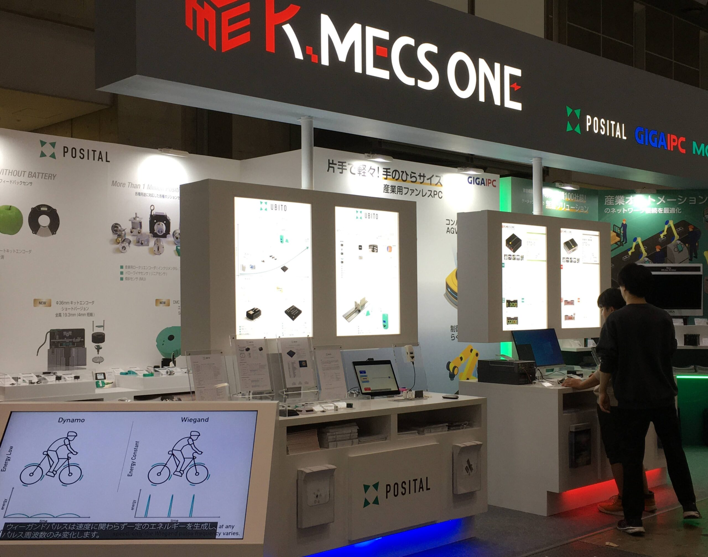
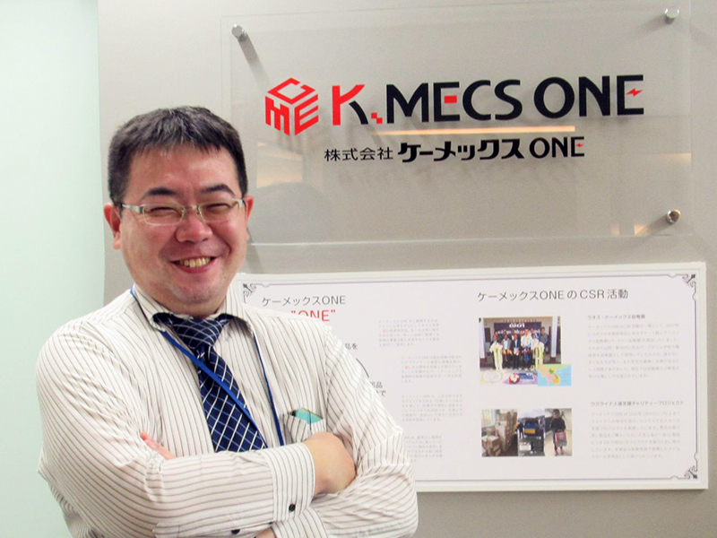
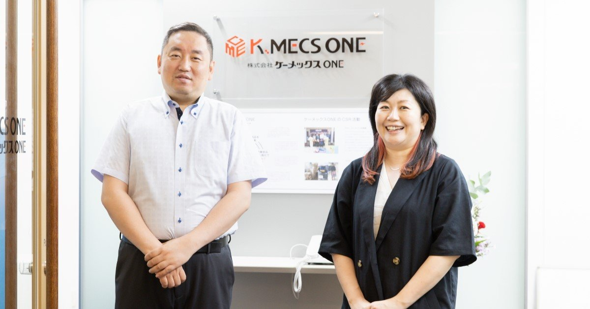

数字で見るケーメックスONE
※ 数値はデモ用のイメージです。実際の最新情報は会社案内をご確認ください。

世界の一流を、
日本の現場の“当たり前”に。
ドイツ・台湾を中心に、世界で選ばれる一流メーカーの産業用部品を、確かな技術サポートとともに日本のものづくりの現場へ。私たちは1955年の創業以来、部品調達という側面から日本の製造業を支え続けてきました。
商社でありながら、私たちの仕事は「モノを右から左へ流す」ことではありません。用途を聞き、型番を選び、設定を助け、代替を探す。若手にも早くから裁量が与えられ、世界の一流を扱う誇りとともに、お客様の課題解決の最前線に立てる環境があります。

お客様の“ものづくり”と
社会の豊かな未来に、貢献する。
私たちは1955年の創業以来、世界中から一流の産業用部品をお客様にお届けすることで、日本の製造業とともに成長してまいりました。いま日本の産業構造は大きな転換期を迎えています。
だからこそ私たちは、製品のご提案にとどまらない柔軟な発想と知見で、お客様の“ものづくり”と社会の豊かな未来に貢献したいと考えています。お客様には感動と満足を、従業員とその家族には夢と喜びを。その想いに共感し、共に挑戦してくれる仲間を待っています。
仕事のフィールド
扱うのは、あらゆる産業の装置・設備を支える基幹部品。4つの領域で世界の一流メーカーを担当します。
ODU をはじめとする高信頼コネクタ。カスタムAssy・特注ケーブルの提案まで。
MOXA の産業用スイッチ・ゲートウェイなど、現場のOTネットワークを支える機器。
POSITAL/Fraba のエンコーダ・傾斜センサなど。装置の“位置”と“動き”を検出する。
過酷環境に耐える組込み/産業用コンピュータ。エッジ処理・制御の中核を担う。
海外メーカーと交渉し、最適なルートと納期で部品を確保する。
用途と環境をヒアリングし、最適な型番・構成を提案する。
初期設定・トラブル対応・後継品移行まで一次対応する。
受発注ポータルを軸に、調達体験そのものをアップデートする。
求める人物像
スキルや経験より、まず“姿勢”を大切にしています。次の4つに一つでも共感できる方と、ぜひお会いしたい。
言われたものを売るのではなく、背景を聞き、本当の課題を一緒に探せる人。
海外メーカーや新しい技術に前向きに関心を持ち、学び続けられる人。
納期も品質も、約束を守る。地味な調整を丁寧に積み重ねられる人。
営業・技術・物流が連携する会社。周囲を巻き込み、成果を分かち合える人。
社員インタビュー

「型番の先」にある
現場の困りごとに応えたい。
- 入社の動機
- 世界の一流部品を扱えること、そして若手にも担当を任せる社風に惹かれました。
- 仕事のやりがい
- お客様の装置課題を技術と一緒に解き、採用が決まった瞬間が何よりの喜びです。
- 1日の流れ
- 午前は見積・納期回答、午後は客先訪問やメーカーとの調整。オンオフの切替がしやすい環境です。
- これからの人へ
- 正解のない相談ほど面白い。一緒に悩んで、一緒に喜べる人と働きたいです。

「困った」を「動いた」に
変える手応え。
- 入社の動機
- メーカー認定を取りながら専門性を深められる点。商社なのに“技術”で戦えるのが魅力でした。
- 仕事のやりがい
- 産業用スイッチの初期設定やトラブルを解決し、現場が動き出す瞬間に立ち会えること。
- 1日の流れ
- 問い合わせ一次対応、検証、営業への技術フィードバック。チームで知見を共有しています。
- これからの人へ
- 最初は知識ゼロでも大丈夫。研修と認定制度で、着実にプロになれます。
働く環境
入社時研修に加え、MOXA等のメーカー認定資格の取得を会社が支援します。
配属後は先輩がマンツーマンで伴走。分からないことを気軽に聞ける関係づくり。
東京・名古屋・大阪の拠点体制。海外メーカーとのやり取りも日常にあります。
各種社会保険完備。社員とその家族が“一生”安心して働ける環境を整えています。

待遇・福利厚生
- 新卒（大卒）24.5万円〜
- 中途（経験3年）30.0万円〜
- 賞与年2回
- 年間休日120日
- 完全週休2日制
- 夏季・年末年始・有給あり
- ●各種社会保険完備（健保・厚生年金・雇用・労災）
- ●通勤手当・時間外手当・役職手当
- ●資格取得支援・慶弔見舞金
- ●定期健康診断
※ 記載の数値・条件はデモ用のモックです。実際の待遇は募集要項および個別のご案内をご確認ください。
募集要項
職種名をクリックすると詳細が開きます。各職種からそのままエントリーできます。
選考フロー
エントリーはこちら
世界と、ものづくりの現場をつなぐ仕事。
少しでも興味を持っていただけたら、まずはお気軽にご連絡ください。
※ 本ページはデモ用モックです。掲載の職種・条件・数値・媒体リンクはサンプルであり、実際の募集内容とは異なります。